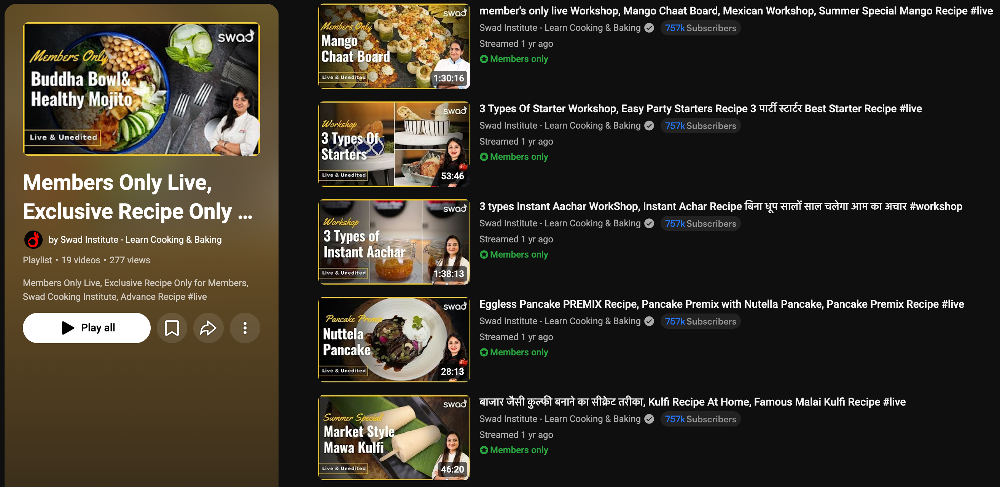

Case 06 · Workshop operations · Swad Cooking Institute
Workshop Operations & YouTube Content Strategy
I worked across the creative and operational sides of Swad’s paid online workshops — writing and directing promotional ads, coordinating enrolments, and managing live production. Alongside this, I identified an opportunity to make the YouTube channel’s recipe content more useful beyond the livestream itself.
Context
Two connected parts of the workshop ecosystem
Swad’s online learning activity involved recurring free livestreams as well as paid masterclasses and recorded course products. My work covered the operations and promotion around paid workshops, while my channel analysis focused on the difference between a live audience experience and a recipe video people could find and revisit later.
Execution
Monthly workshop operations
Paid workshop operations
New live online masterclasses every two to three months
Beyond the free livestream calendar, the institute launched paid live online workshops on a two-to-three-month cycle. The chef finalised the recipe set. My role covered the promotional creative, enrolment coordination and live production from behind the camera.
How the live workshop was structured
Students enrolled through the institute’s course page, completed registration and payment, and received confirmation and joining instructions through email, SMS and WhatsApp. During the session I stayed behind the camera, operated the camera and streaming laptop, and relayed audience questions from the live chat to the chef so technique, measurements and common mistakes could be addressed during the demonstration.
After the class, students received access to the recording. The operational details — session timing, joining instructions, recording access and post-class support handoff — were part of the work around each launch.
Examples of Swad’s course products
These course pages show the wider learning products associated with the institute — recipe instruction, supporting materials and access to recorded lessons. They are examples of the course offering, not claims that I personally produced every lesson.
Workshop promotion & creative production
Promotional concepts I wrote and directed
I contributed to the promotional creative for multiple workshop launches. The examples below show the work across repeated campaigns; one of the listed shoots was also shot and edited by me. The other four are described here only as written and directed, based on my role on those videos.
YouTube content diagnosis
Strong live activity did not automatically create a useful recipe library
Daily livestreams often attracted views, chat activity and audience participation while they were happening. However, the full recordings were not always effective as standalone recipe resources. A viewer looking for one recipe had to navigate a long session — often around fifty minutes — that also included questions and side conversations.
Separately, watch hours were strong while estimated YouTube revenue did not scale correspondingly. I did not treat the format of the livestreams as the sole cause of that gap. I began looking at the difference between content that served the live audience in the moment and content that could attract search traffic and repeat viewing afterwards.
Keep the membership and workshop payment paths distinct
I introduced YouTube channel membership as an additional support and members-only access path. This was separate from paid workshops sold through Swad’s website: website enrolment and payment belonged to the institute’s course flow, while channel membership operated through YouTube.
View the Swad Cooking membership join page
The channel’s members-only playlist gave membership a content destination beyond the public livestreams. It was not the checkout or recording-access system used for the institute’s website courses.

Recommendation & test
Separate the live experience from the recipe library
My recommendation was to retain livestreams where real-time interaction added value, while publishing shorter, edited recipe videos that viewers could find and revisit more easily. I also proposed capturing a livestream and a cleaner recipe version during the same shoot. That simultaneous format was a suggested production approach, not an established workflow.
A clearer edited-upload approach was tested and began to help. However, the team moved away from it before the approach was maintained consistently for long enough to establish its longer-term performance. I therefore do not attribute a quantified revenue increase to the test.
What the work established
- Managed recurring workshop operations around scheduling, promotion, enrolment and live-session delivery.
- Wrote and directed promotional creative for multiple workshop launches, with one example also shot and edited by me.
- Identified a content-format opportunity: livestreams served real-time participation, while edited recipe videos could better support search and repeat viewing.
- Tested an edited-upload direction, but the test period was not long or consistent enough to claim a measured revenue outcome.
Work output
Selected output
Selected workshop and recipe examples. Promotional Reels and live-production evidence are shown in the sections above.